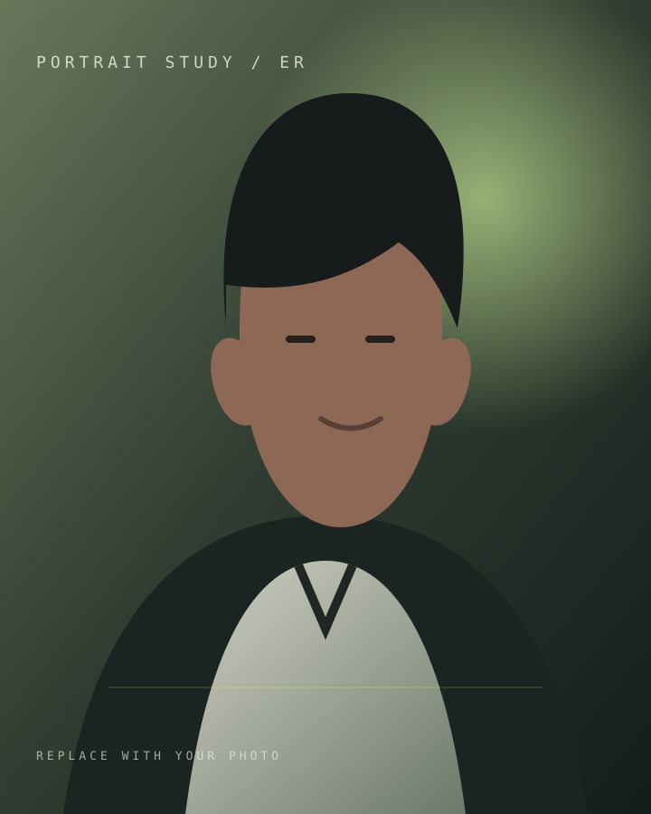

Fluxify
A music player built around a rich listening experience — with local music, playlists, lyrics, Firebase-backed features and a custom audio engine.
ReactViteNode.jsFirebase
Explore repository ↗
SOFTWARE DEVELOPER · ILORIN, NIGERIA
I'm Ejiro Rickson Emmanuel — a developer exploring the space between thoughtful design, useful software and emerging technology.

01 — SELECTED WORK
A selection of experiments, products and ongoing builds. Each one is a chance to learn something new and make something useful.
A music player built around a rich listening experience — with local music, playlists, lyrics, Firebase-backed features and a custom audio engine.
A mindful journaling experience that combines a calm interface with AI-assisted reflection and a Supabase-backed data layer.
A document-based study companion. Upload PDF or text notes and use AI-assisted questions and explanations to explore the material.
02 — THE PERSON
02I'm a Computer Science student and software developer who enjoys turning ideas into practical digital experiences.
I work across frontend and backend development, and I'm especially interested in applications that bring together thoughtful interfaces, useful functionality and AI. I like understanding how things work — not just getting them to run — and I keep learning by building projects of my own.
Right now, I'm growing my skills, improving my projects and looking for opportunities to contribute, learn from a team and do meaningful engineering work.
Let's make something useful ↗03 — MY TOOLKIT
The technologies I use across projects, with room to keep exploring and getting better.
HTML · CSS · JavaScript · React · Next.js
Node.js · Express · Python · REST APIs
Firebase · Supabase · Firestore · SQL fundamentals
Git · GitHub · VS Code · Streamlit · Vite
04 — LEARNING
My learning is supported by coursework, hands-on projects and technical training.
05 — HAVE A PROJECT IN MIND?
I'm open to junior developer opportunities, internships and interesting collaborations.
Get in touch ↗